Nobody could tell them.
The question every scholarship applicant in Tunisia asks, usually in a Facebook group.
Over 100,000 Tunisian students depend on a public scholarship to stay in university. The process is semi-digital: part online form, part paper, part queue. Once a file is submitted it disappears into silence. Sanad gives students what the system never did: visibility, and real-time follow-up.
It started as an education problem. It turned out to be a trust problem.
I first framed the project under SDG 4, Quality Education. Field research shifted the centre of gravity to SDG 16, Strong Institutions: students weren't failing at school, they were failing at an administration.
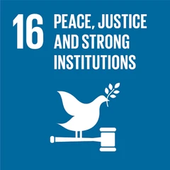
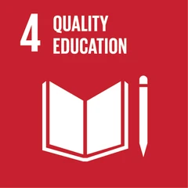
Sources: SDG Index 2024 (sdgindex.org), tunisiaodd.tn
Before talking to anyone, I mapped the national picture: 1 academic paper, 2 reports, 4 articles and 2 open-data portals.
Slowness + inequality = dropouts and mistrust.
Sources: SDG Index 2024 · OOUN · INS 2022 · S. Srairi, An Analysis of Factors Affecting Student Dropout: The Case of Tunisian Universities · La Presse
Two groups live this process. The proto-persona, Marwan, 21, from Gafsa and studying in Jendouba, depends entirely on his grant for housing and food.
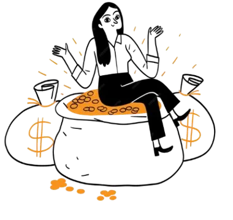
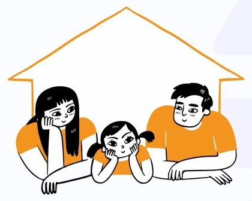
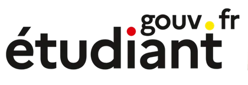
France's CROUS (etudiant.gouv.fr) integrates every digital service into student life, including a streamlined financial-aid process. My model, and my list of what to avoid.
Sources: user reviews on Reddit, articles on info.gouv.fr, a personal test of the portal
Students and parents dealing with grant paperwork, and the agents serving them.
Mnihla municipality, Ariana, on 27/10/2025, and student Facebook groups on 25–26/10/2025.
Passive and participant observation, including my own scholarship file.
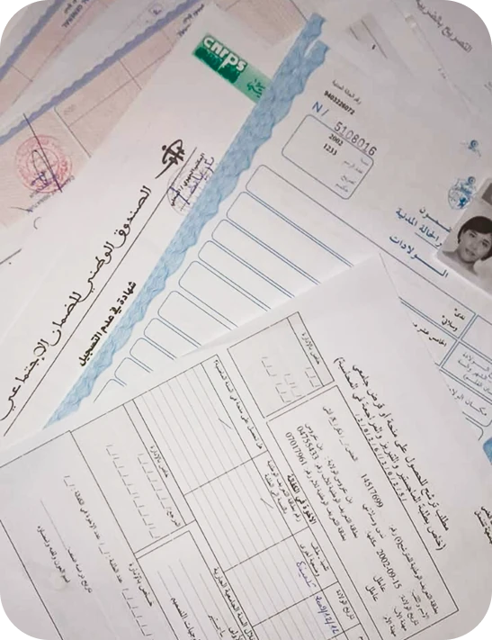
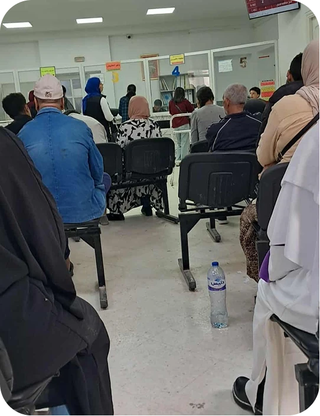
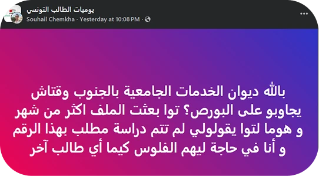
What I saw in the field
A full waiting room for paperwork that could be a form. A pile of certificates from offices that don't talk to each other.
And in the Facebook groups: "I sent my file over a month ago and they still tell me it hasn't been processed. I need the money like any other student."
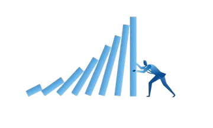
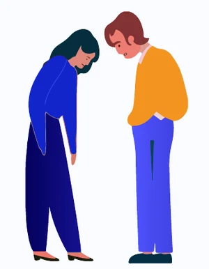
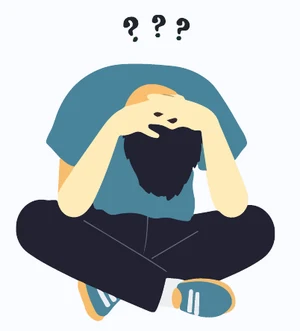
3 semi-structured interviews with students at three different points of the process.
A Google Forms survey ran for two weeks to validate the scale of the problem.
The current process is slow, opaque and not digital. Steps pile up, answers come late, and trust runs out before the journey even ends.
From searching for information to cashing the money. Goal: get the grant on time, without stress or useless trips, with clear follow-up.
Scroll sideways on smaller screens.
Never leave a student guessing.
one journey without guessing.
One secure entry point
A single national login with a unique student ID.
Why it mattersNo more hunting for the right link on Facebook: one official door for every student.
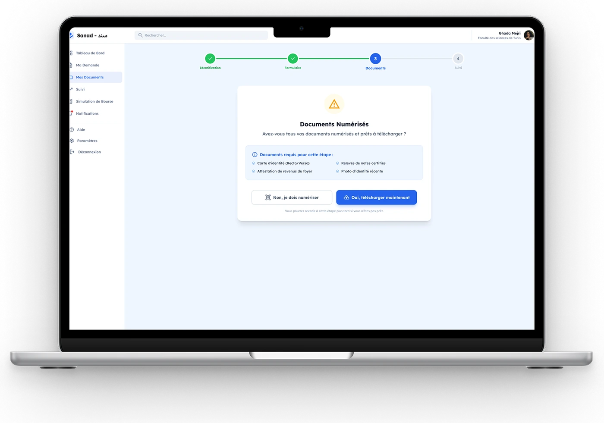
Check before you start
Lists the papers needed and asks if they are ready.
Why it mattersGhada feared making a mistake. Knowing upfront avoids a rejected file weeks later.
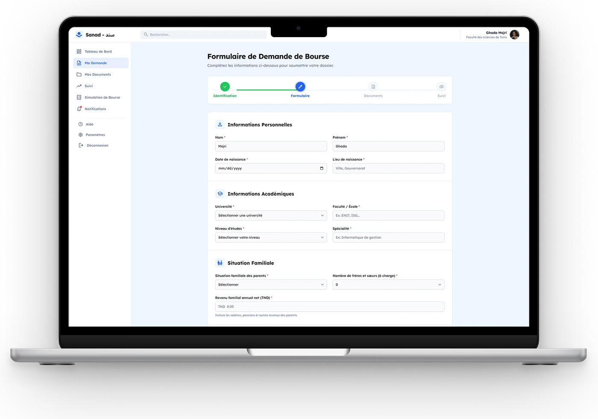
A guided application form
Personal, academic and family info, step by step with a progress bar.
Why it mattersSmall steps and clear labels make a heavy procedure feel manageable.
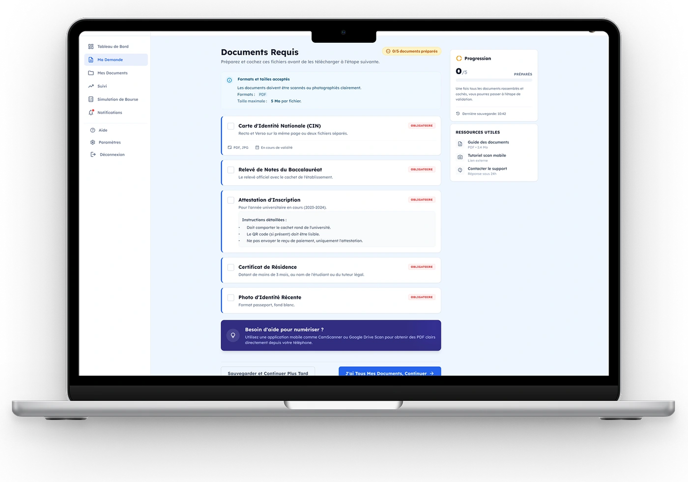
Required documents, explained
Each paper with its format, status and instructions.
Why it mattersOne missing document used to block everything in silence. Now it is visible.
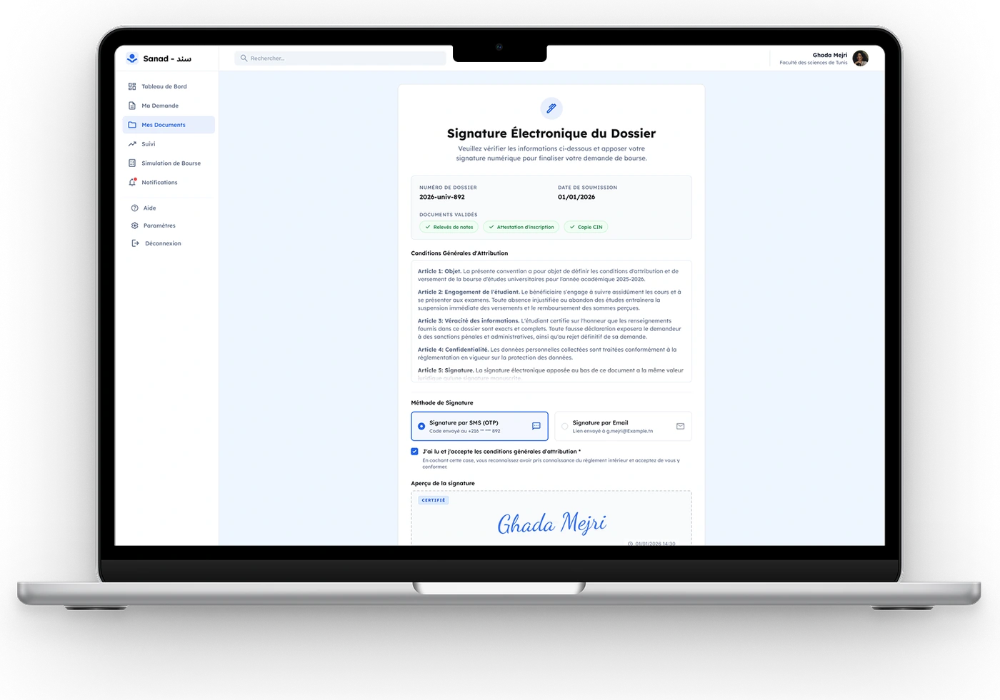
Electronic signature
Sign the file by SMS or email, no trip, no post.
Why it mattersRemoves the posting step: no extra travel, no risk of loss.
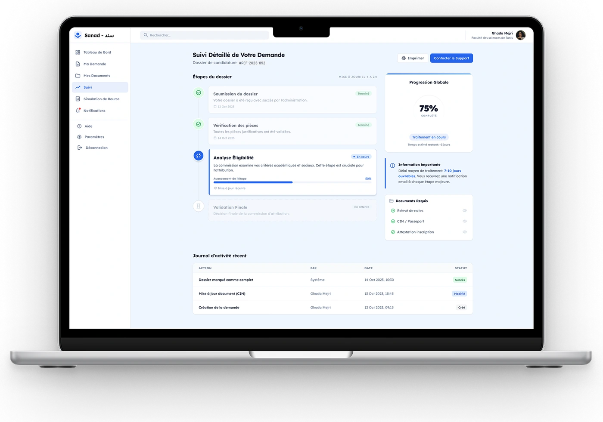
Real-time tracking
Every stage, a progress score and an activity log.
Why it mattersThe answer to "Did my file go through?", always one glance away.
in motion.
Now one they can follow.
A high-fidelity platform that turns a fragmented, semi-digital procedure into one transparent service, built with the students who live it every year.
The biggest lesson was the pivot itself: the problem you're given is rarely the problem you need to solve.